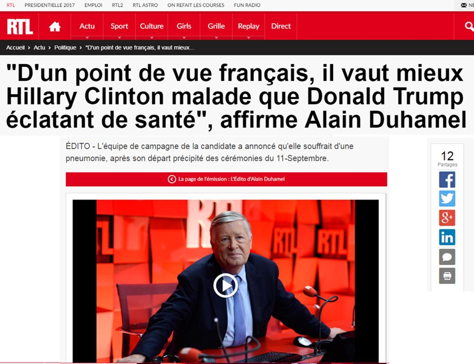

Devrait-on parler de la fin de l’Empire romain d’Occident par allusion au précédent que nous connaissons tous depuis les bancs de l’école ? Ces derniers jours, nous entendons beaucoup parler des folies inqualifiables qui caractérisent la course présidentielle US, de l’évincement éventuel d’un candidat pourtant reconnu et massivement soutenu au moustique qui serait venu se poser sur le sourcil droit de Mme Clinton lors des débats et qui aurait donc prédéterminé sa future victoire. Nous entendons parler de ses maladies hypothétiques, des mystérieuses injections que lui feraient un non moins mystérieux garde du corps et des propos machistes qu’auraient tenu Trump en 2005 et qui lui vaudraient d’être disqualifié. Que l’Amérique s’emballe, on pourrait encore le comprendre du fait de la spécificité de sa « culture » mais que les médias français s’y adonnent eux aussi à cœur joie, il y a de quoi ... s’étonner.
Comme le surréalisme décadentiel est une maladie contagieuse, elle ne connaît pas de frontières. Ainsi, Kerry et Ayrault entendent faire juger (un jour !) Poutine pour crimes de guerre à Alep alors que les mêmes ne se sont pas excusés d’avoir liquidé entre 70 et 80 militaires (dont des officiers et des généraux) de l’AAS.
C’est à se demander s’ils n’ont pas été plutôt offusqués par les frappes vindicatives russes qui ont détruit un bunker avec une trentaine de hauts gradés provenant notamment des USA, de la Grande-Bretagne et des monarchies wahhabites alliées du gouvernement actuel socialiste? Entre-temps, 1700 courriels à l’appui, Wikileaks confirme l’implication directe de Mme Clinton dans la vente d’importantes cargaisons d’armes, d’abord aux islamistes anti-kadhafistes, ensuite à l’EI via le Qatar pour hâter le renversement d’Assad. Mû par de nobles principes, Hollande hésite à recevoir le Président russe si bien que celui-ci, fatigué d’avoir à subir ses velléités guignolesques, renonce à rencontrer un chef d’Etat que la libération d’Alep n’intéresse certainement pas.
Ce bilan qui aurait pu être tragi-comique si une foultitude de vies humaines n’avaient pas été en jeu reflète une dimension plus locale de la décrépitude qui frappe l’Occident. Parallèlement, il tient à une dimension plus métaphysique qui explique pourquoi les USA, l’OTAN et ses vallets détruisent tout ce qu’ils sont amenés à toucher, un peu comme les orcs de Warcraft. S’il est plus vrai que vrai qu’ils exportent la mort dans les pays du monde arabo-musulman, de un, en détruisant l’islam à travers la confrontation chiites-sunnites, de deux, en vidant les pays musulmans de leurs populations, il est non moins patent qu’ils détruisent les populations européennes dont ils sont issus et qu’ils sont censés représenter. Complotisme ?
Après l’introduction de la loi Taubira, l’application des recommandations de l’OMS sur l’éducation sexuelle chez les enfants de moins de 14 ans, la déconstruction des programmes d’histoire avec le remplacement des cours consacrés au christianisme médiéval (optionnels) par des cours consacrés à l’enseignement de l’islam, l’introduction expérimentale des cours d’improvisation selon le recette de Jamel Debouzze, voici qu’un projet de loi sur l’interdiction de critiquer l’avortement a failli être validé avant d’être rejeté, in extremis, le 30 septembre, par le Parlement.
Parallèlement, sous couvert de prévention, la première salle de shoot vient tout juste d’être inaugurée à Paris.
Que doit-on en conclure ?
Le génocide des peuples musulmans sur leur sol historique fait pendant à un génocide, beaucoup plus étrange et idéologique, des peuples européens sur leur sol à eux. Les techniques déployées sont bien entendu différentes mais le résultat, à terme, devrait être le même. Qui plus est, les commanditaires sont les mêmes.
Ces commanditaires de l’ombre dont nous ne voyons que les marionnettes importent dans l’UE un islam dont se défient les pays musulmans laïcs eux-mêmes. Les zones dite de non-droit ne sont pas seulement invivables : la charia y évince efficacement le droit national. L’Allemagne doit maintenant composer avec un phénomène inouï qui est celui des mariages de mineurs. D’après les données communiquées par le Ministère de l’Intérieur allemand et repris par The Gatestone Institute, « 1475 enfants mariés ont été répertoriés sur le territoire allemand au 31 juillet 2016. Sur ce nombre, 361 conjoints ont moins de 14 ans ». Le pire de ce que l’islam dénaturé aurait pu produire se retrouve dans les pays européens qui traduisent en justice des Français de souche pour des réflexions parfois certes xénophobes mais dans les faits anodines mais ne font rien pour contrecarrer l’invasion par un djihad semi-passif des pays chrétiens de par leur Histoire et de par leur essence. Philippe de Villiers a tout à fait raison lorsqu’il parle de trois générations de Présidents qui ont livré et livrent le pays à l’islam. Cela vaut pour presque tous les pays d’Europe occidentale. De plus, cet islam n’est pas celui du Syrien lambda pro-Assad ou du partisan de la Jamahiriya libyenne. Je vous renvoie à cet égard à une scrupuleuse enquête réalisée dernièrement par l’IFOP pour l’Institut Montaigne qui montre que sur l’ensemble des musulmans résidant en France, le quart est composé d’étrangers. 46 % des sondés sont sécularisés, 26 % sont pieux et sont pour le port du hijab mais contre le voile intégral, 28 %, tenez-vous bien, se revendiquent comme fondamentalistes et proclament haut et fort la primauté inconditionnelle de l’islam (religieux et politique !) sur les lois de la République. La majeure partie des sondés appartenant à la dernière catégorie sont des jeunes de moins de 25 ans. Où va-t-on ?
Nous sommes par conséquent confrontés à un génocide civilisationnel tous azimuts qui rappelle, dans une optique aussi métaphysique que terre-à-terre, l’Apocalypse selon Saint Jean. Un apocalypse teint d’irénisme et/ou de mauvaise foi, Hollande venant d’annoncer que le femme voilée d’aujourd’hui sera la Marianne de demain. Mais il n’y aura pas de Marianne demain. Comme il n’y aura pas de Syrie sans Assad et qu’il n’y a plus de Libye depuis que Kadhafi a été lynché sous les ricanements hystériques de la candidate à la présidentielle US.
Décidément, quand Dieu veut perdre un homme, il lui ôte la raison. L’Apocalypse, n’est-ce pas l’expression d’une perte collective de la raison chez les dirigeants et l’atrophie de l’instinct de survie chez les peuples ?
Partager cette page